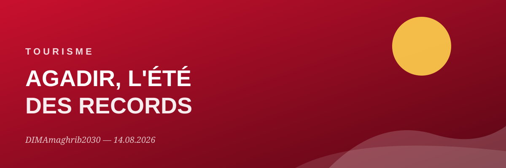
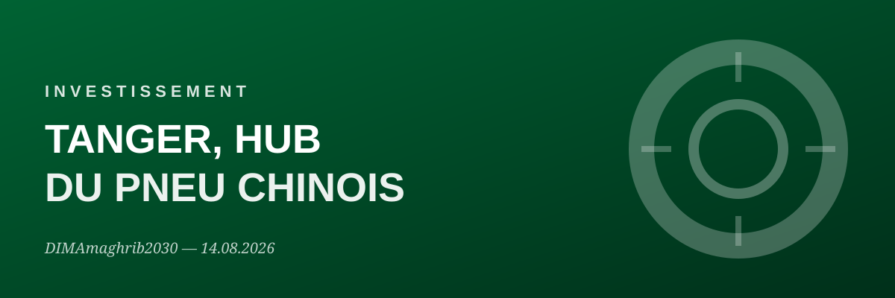
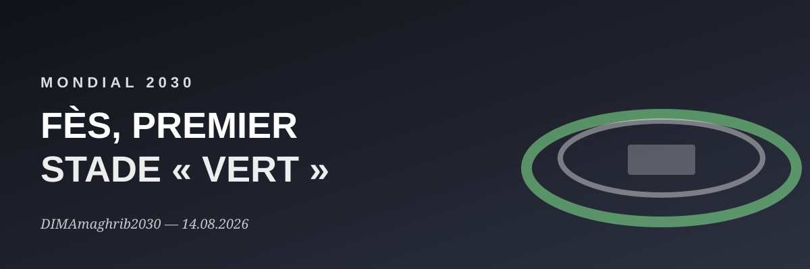
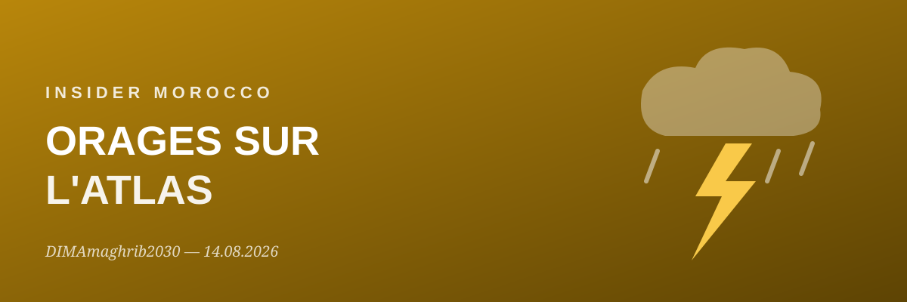
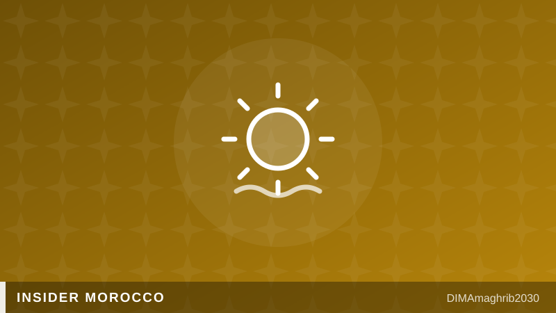
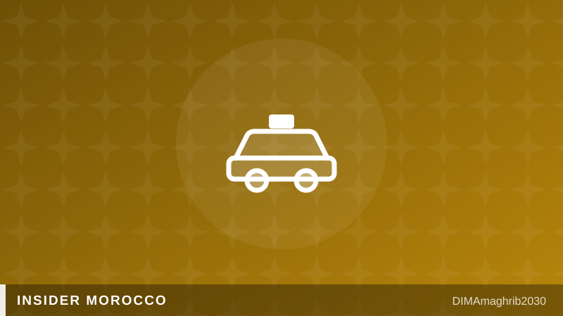

Avec l'Espagne et le Portugal, le Maroc accueillera six stades dans six villes, dont le futur stade Hassan II de 115 000 places près de Casablanca — le plus grand du tournoi. Un tremplin unique pour le tourisme, les infrastructures et l'image du pays. Alongside Spain and Portugal, Morocco will host six stadiums in six cities, including the future 115,000-seat Hassan II Stadium near Casablanca — the largest of the tournament. A unique springboard for tourism, infrastructure and the country's global image.
Selon la CNUCED, les flux d'investissements directs étrangers ont atteint 3,3 milliards de dollars, portés par l'automobile et les batteries.According to UNCTAD, foreign direct investment inflows reached $3.3 billion, driven by the automotive and battery sectors.
La feuille de route touristique 2023-2026, dotée de 6,1 milliards de dirhams, mise sur neuf pôles thématiques.The 2023-2026 tourism roadmap, backed by 6.1 billion dirhams, focuses on nine thematic clusters.
Maroc, Espagne et Portugal visent 30 millions de visiteurs annuels grâce à une coopération régionale renforcée.Morocco, Spain and Portugal aim for 30 million annual visitors through strengthened regional cooperation.




Élaborée avec le secteur privé, elle s'articule autour de neuf pôles thématiques et cinq axes transversaux pour réinventer l'offre marocaine centrée sur l'expérience client.Developed with the private sector, it is built around nine thematic clusters and five cross-cutting priorities to reinvent Morocco's offering around the guest experience.
Le programme Cap Hospitality et une nouvelle charte de l'investissement offrent jusqu'à 30% de soutien financier aux projets touristiques.The Cap Hospitality programme and a new investment charter offer up to 30% financial support for tourism projects.
+13% de capacité aérienne, 52 nouvelles routes internationales et de nouvelles bases à Rabat, Marrakech et Tétouan.+13% air capacity, 52 new international routes, and new airline bases in Rabat, Marrakech and Tetouan.
L'automobile reste le moteur des IDE marocains, portée par un projet industriel majeur du constructeur.The automotive industry remains the engine of Morocco's FDI, driven by this major manufacturer's industrial project.
Les projets COBCO à Jorf Lasfar et Gotion à Kénitra confirment l'essor de la filière batteries adossée aux énergies renouvelables.The COBCO project in Jorf Lasfar and Gotion's plant in Kénitra confirm the rise of a battery industry built on renewable energy.
Selon la CNUCED, le Maroc devance l'Algérie et la Tunisie et se classe parmi les dix premières destinations d'investissement en Afrique.According to UNCTAD, Morocco overtakes Algeria and Tunisia and ranks among Africa's top ten investment destinations.
La fédération marocaine a soumis les plans du plus grand stade du tournoi, qui accueillera notamment des rencontres majeures du Mondial 2030.The Moroccan football federation has submitted plans for the tournament's largest stadium, set to host major 2030 World Cup matches.
Aux côtés de l'Espagne (11 stades, 9 villes) et du Portugal (3 stades, 2 villes), le Maroc modernise ses infrastructures sportives à l'échelle nationale.Alongside Spain (11 stadiums, 9 cities) and Portugal (3 stadiums, 2 cities), Morocco is modernising sports infrastructure nationwide.
Conçus comme des sites polyvalents, les stades marocains accueilleront concerts, salons et événements culturels bien après le coup de sifflet final.Designed as multi-purpose venues, Morocco's stadiums will host concerts, trade fairs and cultural events long after the final whistle.
Le guide gratuit d'un Marocain natif : les vrais bons plans, et les pièges à éviter. The free guide by a Moroccan native: the real good plans, and the traps to avoid.

Vigilance orange, vraies bonnes adresses fraîches et mythes touristiques démontés par une locale.Orange heat alert, real cool-down spots, and tourist myths busted by a local.
Lire l'article →Read article →
Compteur, petites coupures, Careem, inDrive et transferts riad : le vrai guide d'un Marocain pour ne pas se faire avoir.Meters, small bills, Careem, inDrive and riad transfers: a Moroccan's real guide to getting around without getting ripped off.
Lire l'article →Read article →